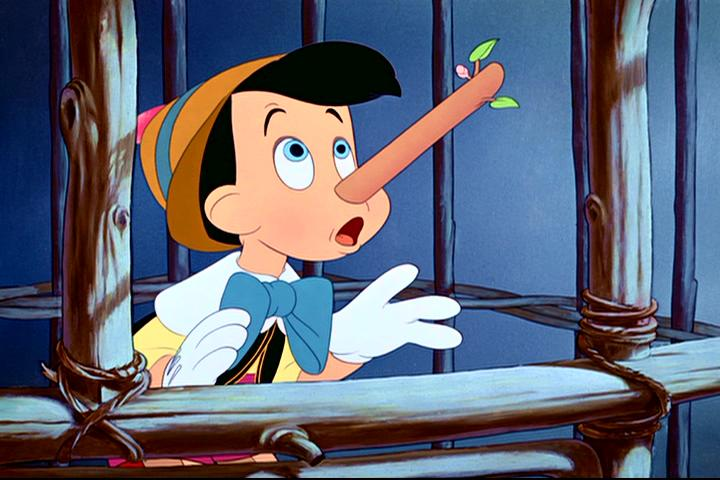
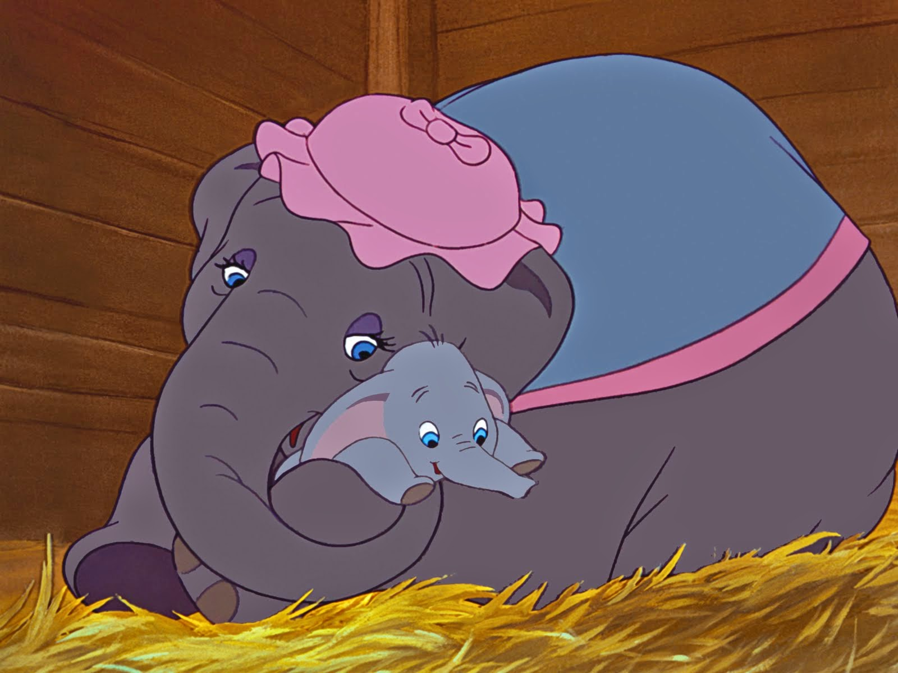
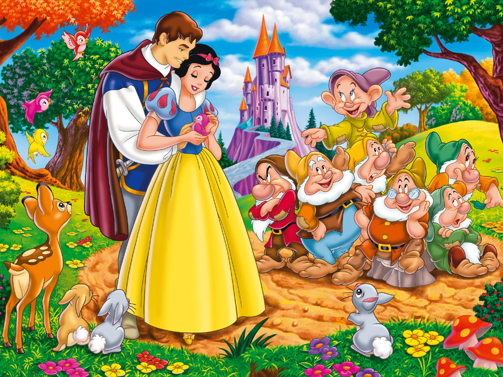
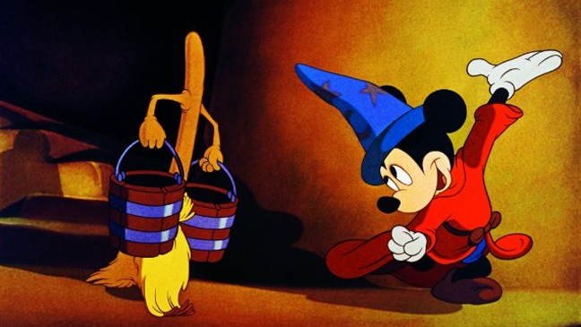
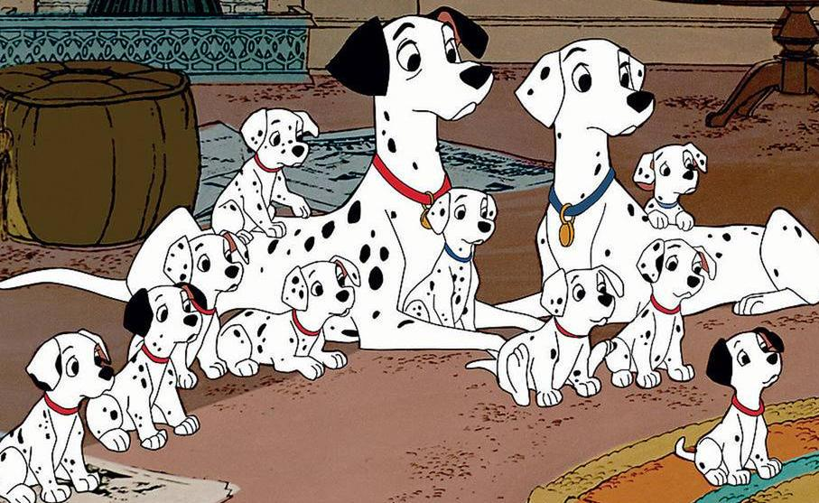
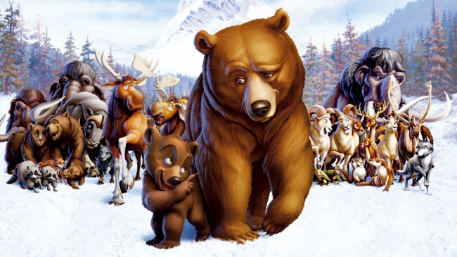
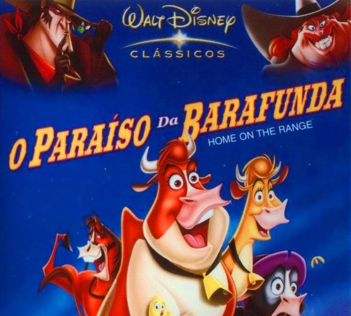
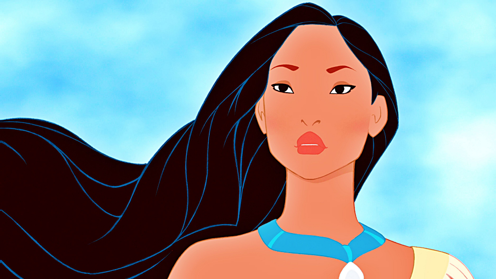
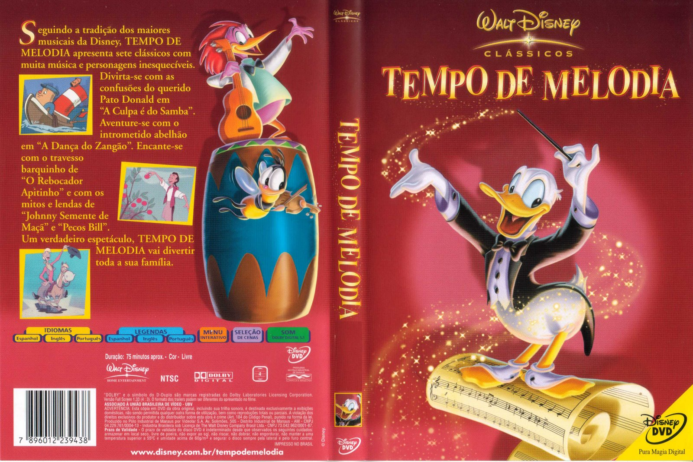
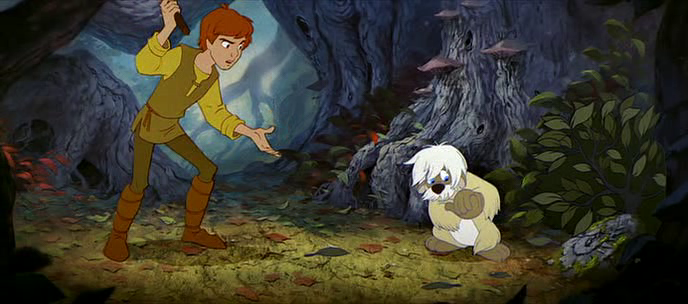

Top 5 Melhores Filmes da Disney
Pinóquio (1940)

O ponto mais alto das invenções da Disney chega com a segunda longa-metragem –
que continua a ser a mais mágica que os estúdios alguma vez fizeram. O filme começa com um grilo a
cantar docemente e depois mergulha em cenas que mais parecem ter sido tiradas de um pesadelo: o narigão
crescente do Pinóquio é das metáforas mais sinistras e profundas da história da animação. Contendo um
universo de ansiedade e maravilha, Pinóquio não é senão imortal.
Dumbo (1941)

De forma pouco inspiradora, a ideia para Dumbo adveio de um protótipo para um
brinquedo novo. Mas esta história sobre um elefante bebé que nasceu num circo é doce, tocante e cheia de
energia. O enredo é profundamente triste, com uma mãe separada do seu filho. A dança jazz que os
elefantes cor-de-rosa fazem quando o Dumbo fica bêbado por engano é uma cena para nunca mais esquecer
A Branca de Neve e os Sete Anões (1937)

Pode não ter sido o primeiro filme de animação, mas com A Branca de Neve e os Sete
Anões Walt Disney e os seus animadores criaram um novo género. Olhem para Frozen e vejam os avanços que
a animação já fez. A Branca de Neve tem uma heroína corajosa, homens bem compostos, embora pouco dados à
inteligência, uma animação bonita, músicas inesquecíveis e a melhor femme fatale da história do cinema.
Fantasia (1940)

Enquanto O Aprendiz de Feiticeiro estava em pós-produção para assinalar o regresso
do rato Mickey, Walt Disney decidiu que a curta de animação tinha de ter desenhos ao som de música
clássica e foi assim que surgiu Fantasia. Sublime e meio disparatado (até existe um crocodilo a fazer
ballet e o próprio diabo), este filme é dos melhores do estúdio.
101 Dálmatas (1961)

OK, talvez seja ela a pior vilã de todas as vilãs da Disney (não é fácil chegar a
um veredicto final). Onde um de nós vê um cachorrinho adorável, Cruella de Vil vê uma peça de roupa que
poderá estar na moda e o seu plano é transformar 99 cães fofinhos num belo casaco. Tendo Londres como
pano de fundo, 101 Dálmatas leva a Disney até à idade moderna, dispensado as fadas-madrinhas e as
princesas. E os latidos à meia-noite mostram a Disney no seu melhor.
Top 5 Piores Filmes da Disney
Irmão Urso (2003)

Esta fantasia com cenas místicas conta a história de um rapaz da tribo Inuit que
decide vingar-se do urso que matou o seu irmão. Mas quando decide caçá-lo, é ele que se transforma num
urso. A animação sem inspiração e a lamechice fácil fazem com que seja um dos filmes mais negligenciados
de sempre.
O Paraíso da Barafunda (2004)

Tudo sobre O Paraíso da Barafunda cansa. No início do ano 2000, este era o tipo de
mediocridade que fazia com que os clássicos da Disney fossem apenas uma coisa do passado (e lembrem-se
que foi neste Verão que Os Incríveis, da Pixar, arrasou nas bilheteiras). O filme foi um fiasco; rolaram
cabeças
Pocahontas (1995)

A época dos clássicos da Disney, que inclui grandes sucessos como A Bela e o
Monstro (1991), Aladino (1992) e Rei Leão (1994) tinha eventualmente de acabar. Pocahontas foi o
primeiro filme de animação da Disney baseado na história verídica de uma pessoa. Infelizmente, o estúdio
pôs-se a jeito e choveram acusações de estereotipar os nativos dos Estados Unidos da América.
Tempo de Melodia (1948)

Esta antologia de curtas é normalmente (e de forma compreensível) esquecida. Não
tem a grandeza clássica de Fantasia e estes sete contos – sobre o herói Johnny Appleseed e o cowboy
Pecos Bill, entre outros – perderam o seu prestígio cultural.
Taran e o Caldeirão Mágico (1985)

A segunda tentativa da Disney – depois de A Espada Era a Lei – de adaptar um
romance britânico corre mal, graças a um enredo praticamente inexistente e a personagens pseudo
Tolkianas (que incluem uma imitação barata de Gollum chamada Gurgi) cansativas. É uma pena, porque o
filme tem rasgos de verdadeira magia – a voz de John Hurt enquanto Rei Cornudo é genuinamente
assustadora.